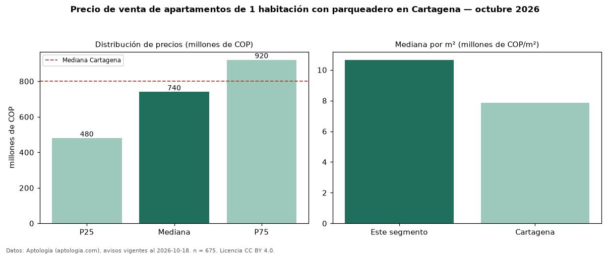

Precio de venta de apartamentos de 1 habitación con parqueadero en Cartagena — octubre 2026
COP 740 millones es el precio mediano de apartamentos de 1 habitación con parqueadero en venta en Cartagena (n = 675 avisos). Frente a la mediana de los apartamentos de 1 habitación en venta de Cartagena (COP 670 millones, n = 910), queda 10 % por encima; este segmento reúne el 74 % de esos avisos. Por metro cuadrado, la mediana es COP 10,66 millones/m² (n = 597), 2 % por encima de los apartamentos de 1 habitación en venta de Cartagena (COP 10,44 millones/m²). El área mediana anunciada es 66 m². La administración mediana declarada es COP 600.000 al mes (n = 508). La mitad central de los avisos va de COP 480 millones a COP 920 millones (razón 1,9), una dispersión moderada. El estrato más frecuente es 6 (61 % de los avisos con estrato). La mediana de todos los apartamentos en venta de Cartagena es COP 800 millones (−7 % de diferencia). Datos: Aptología (aptologia.com), CC BY 4.0 — https://www.aptologia.com/venta/cartagena. Archivos: PDF, CSV con las cifras y gráfica PNG.

| Avisos únicos | 675 |
|---|---|
| Percentil 25 | COP 480.000.000 |
| Mediana | COP 740.000.000 |
| Percentil 75 | COP 920.500.000 |
| Mediana por m² | COP 10.655.737 |
Fuente: avisos vigentes de portales inmobiliarios recopilados por Aptología, deduplicados (mínimo 30 avisos únicos por celda). Precios pedidos, no cerrados. Fecha: 2026-10-18.